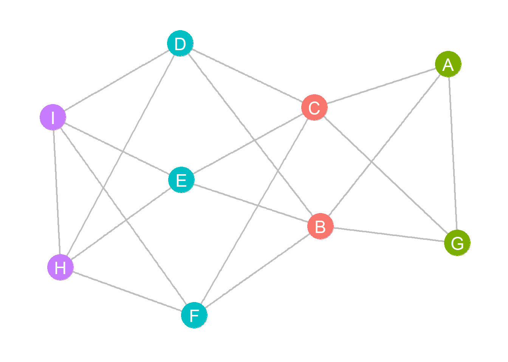

As we noted in the role equivalence handout, for odd reasons, classical approaches to structural similarity in networks used distance based approaches but did not measure similarity directly. More recent approaches from network and information science prefer to define vertex similarity using direct similarity measures based on local structural characteristics, like node neighborhoods.
Mathematically, similarity is a less stringent (but also less well-defined) relation between pairs of nodes in a graph than distance, so it can be easier to work with in most applications.
For instance, similarity is required to be symmetric (\(s_{ij} = s_{ji}\) for all \(i\) and \(j\)) and most metrics have reasonable bounds (e.g., 0 for least similar and 1.0 for maximally similar). Given such a bounded similarity we can get to dissimilarity by subtracting one: \(d_{ij} = 1 - s_{ij}\)
Consider two nodes and the set of nodes that are the immediate neighbors to each. In this case, most vertex similarity measures will make use of three pieces of information:
The number of common neighbors \(p\).
The number of actors \(q\) who are connected to node \(i\) but not to node \(j\).
The number of actors \(r\) who are connected to node \(j\) but not to node \(i\).
In the simplest case of the binary undirected graph then these are given by:
\[
p = \sum_{k = 1}^{n} a_{ik} a_{jk}
\]
\[
q = \sum_{k = 1}^{n} a_{ik} (1 - a_{jk})
\]
\[
r = \sum_{k = 1}^{n} (1- a_{ik}) a_{jk}
\]
In matrix form:
\[
\mathbf{A}(p) = \mathbf{A} \mathbf{A}
\]
\[
\mathbf{A}(q) = \mathbf{A} (1 - \mathbf{A})
\]
\[
\mathbf{A}(r) = (1 - \mathbf{A}) \mathbf{A}
\]
Let’s look at an example:
library(networkdata)library(igraph) g.flint <- movie_267 g.flint <-delete_vertices(g.flint, degree(g.flint) <=3) A <-as.matrix(as_adjacency_matrix(g.flint)) A.p <- A %*% A #common neighbors matrix A.q <- A %*% (1- A) #neighbors of i not connected to j A.r <- (1- A) %*% A #neighbors of j not connected to i A.p[1:10, 1:10]
Note that while \(\mathbf{A}(p)\) is necessarily symmetric, neither \(q\) nor \(r\) have to be. Barney has many more neighbors that Bam Bam is not connected to than vice versa. Also note that the \(\mathbf{A}(r)\) matrix is just the transpose of the \(\mathbf{A}(q)\) matrix in the undirected case.
So the most obvious measure of similarity between two nodes is simply the number of common neighbors:
\[
s_{ij} = p_{ij}
\]
We have already seen a version of this in the directed case when talking about the HITS algorithm (Kleinberg 1999), which computes a spectral (eigenvector-based) ranking based on the matrices of common in and out-neighbors in a directed graph.
In this case, similarity can be measured either by the number of common in-neighbors or the number of common out-neighbors.
If the network under consideration is a citation network, then the number of common in-neighbors between two papers is their co-citation similarity and the number of common out-neighbors is their bibliographic coupling similarity.
One problem with using unbounded quantities like the number of common (in or out) neighbors to define node similarity is that they are only limited by the number of nodes in the network. Thus, an actor with many neighbors will end up having lots of other neighbors in common with lots of other nodes, which will mean we would count them as “similar” to almost everyone.
Normalized similarity measures deal with this issue by adjusting the raw similarity based on \(p\) using the number of non-shared neighbors \(q\) and \(r\).
The two most popular versions of normalized vertex similarity scores are the Jaccard index and the cosine coefficient.
Once again, showing results comparable to the previous.
Note, that all three of these pairwise measures of similarity are bounded between zero and one, with nodes being maximally similar to themselves. As we also noted, these types of measures also define a distance on each pair of nodes. So the cosine distance between two nodes is one minus the cosine similarity, and so on for the Jaccard and Dice indexes.
Because they define distances, this also means that these approaches can be used to find approximately structurally equivalent classes of nodes in a graph just like we did with the Euclidean and correlation distances.
For instance, consider our toy graph from before with four structurally equivalent sets of nodes:

Figure 1: A toy graph demonstrating structural equivalence.
The cosine similarity matrix for this graph is:
A <-as.matrix(as_adjacency_matrix(g)) A.p <- A %*% A A.q <- A %*% (1- A) A.r <- (1- A) %*% A C <- A.p / (sqrt(A.p + A.q) *sqrt(A.p + A.r))round(C, 2)
A B C D E F G H I
A 1.00 0.26 0.26 0.58 0.58 0.58 0.67 0.00 0.00
B 0.26 1.00 1.00 0.00 0.00 0.00 0.26 0.67 0.67
C 0.26 1.00 1.00 0.00 0.00 0.00 0.26 0.67 0.67
D 0.58 0.00 0.00 1.00 1.00 1.00 0.58 0.25 0.25
E 0.58 0.00 0.00 1.00 1.00 1.00 0.58 0.25 0.25
F 0.58 0.00 0.00 1.00 1.00 1.00 0.58 0.25 0.25
G 0.67 0.26 0.26 0.58 0.58 0.58 1.00 0.00 0.00
H 0.00 0.67 0.67 0.25 0.25 0.25 0.00 1.00 0.75
I 0.00 0.67 0.67 0.25 0.25 0.25 0.00 0.75 1.00
Note that structurally equivalent nodes have similarity scores equal to 1.0. In this case, the distance matrix is given by:
D <-1- C
And a hierarchical clustering on this matrix reveals the structurally equivalent classes:
D <-dist(D) #transforming E to a dist object h.res <-hclust(D, method ="ward.D2")plot(h.res)
We can package all that we said before into a handy function that takes a graph as input and returns all three normalized similarity metrics as output:
vertex.sim <-function(x) { A <-as.matrix(as_adjacency_matrix(x)) A.p <- A %*% A A.q <- A %*% (1- A) A.r <- (1- A) %*% A J <- A.p / (A.p + A.q + A.r) C <- A.p / (sqrt(A.p + A.q) *sqrt(A.p + A.r)) D <- (2* A.p) / ((2* A.p) + A.q + A.r)return(list(J = J, C = C, D = D)) }
In the Flintstones network, we could then find structurally equivalent blocks from the similarity analysis as follows (using Jaccard):